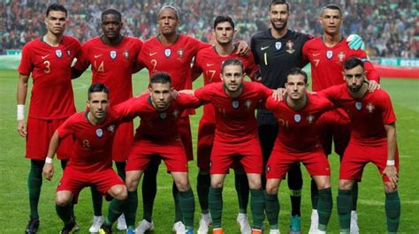

A única Copa que Gales participou foi em 1958.
A Seleção Galesa de Futebol representa o País de Gales nas competições de futebol da FIFA. Esta selecção só esteve três vezes em competições oficiais: participou na Copa do Mundo, em 1958, na qual chegou aos quartos-de-final, esteve também no Campeonato Europeu de Futebol, em 2016, no qual chegou às semi-finais e no Campeonato Europeu de Futebol, em 2020, no qual foi eliminada nas oitavas de final.
| Data/Hora | Estádio | Adversário |
|---|---|---|
| 21 nov 2022 / 16h00 | Estádio Ahmad bin Ali | Estados Unidos |
| 25 nov 2022 / 07h00 | Estádio Ahmad bin Ali | Irã |
| 29 nov 2022 / 16h00 | Estádio Ahmad bin Ali | Inglaterra |